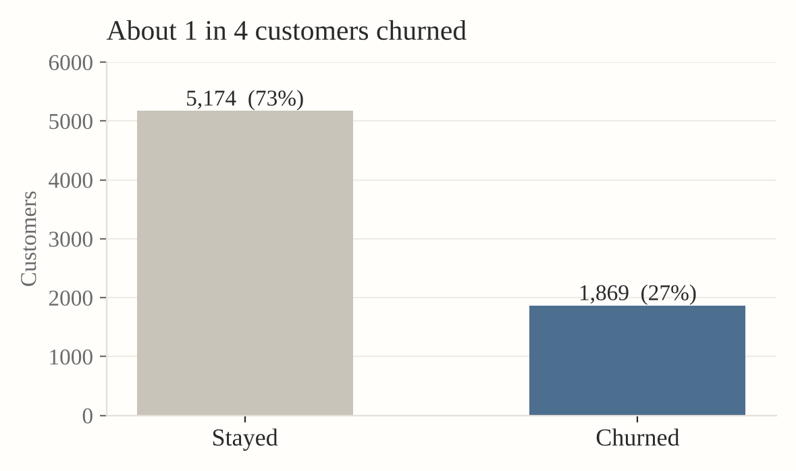
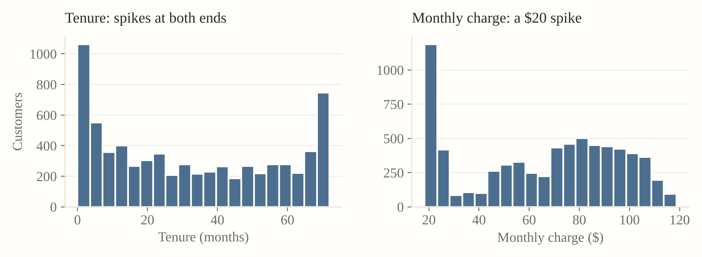
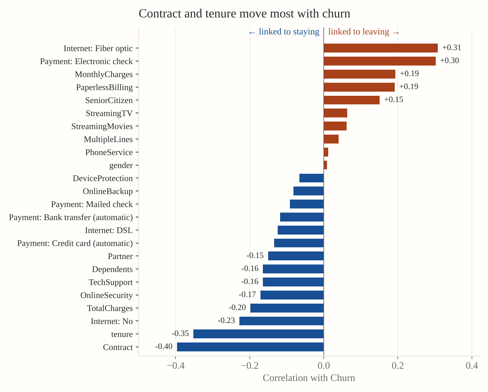
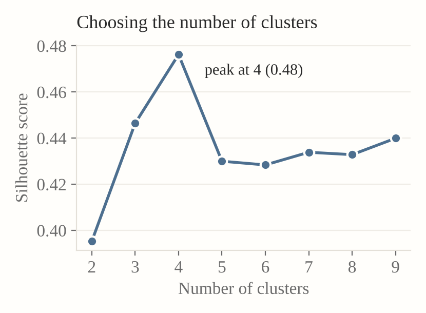
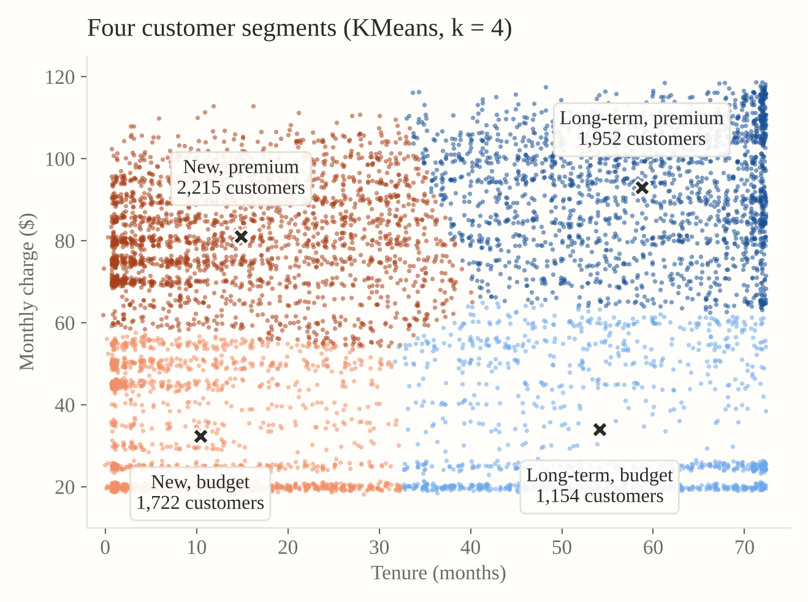
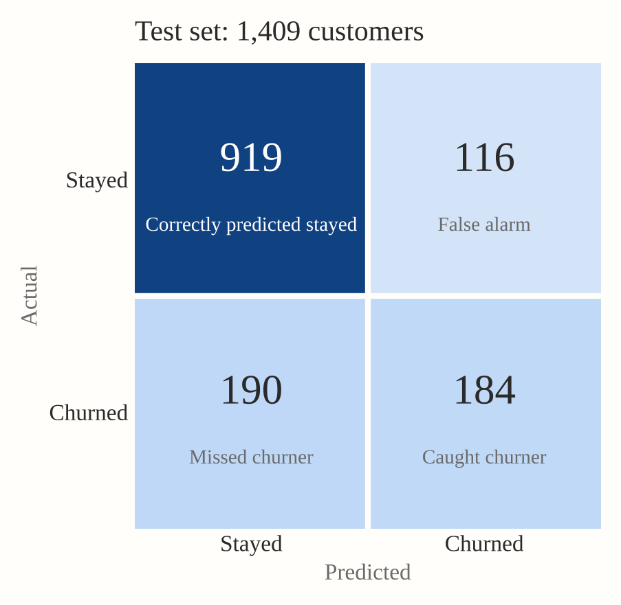
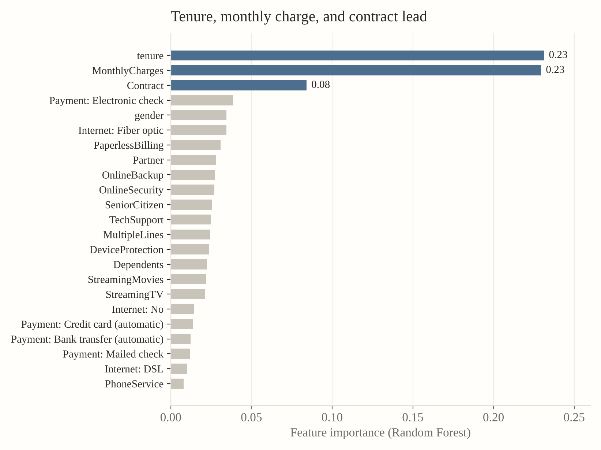

1 · The problem and the data


2 · Exploring and preparing the data
The 11 “missing” values weren’t errors. Every blank TotalCharges belonged to a customer with 0 months of tenure: they simply hadn’t been billed yet, so the blanks were filled with $0.



3 · The model and what it found


| My hypothesis | Feature importance rank |
|---|---|
| Tenure | #1 ✓ |
| Monthly charges | #2 ✓ |
| Senior citizen | #11 ✗ |
| Contract (not predicted) | #3 |